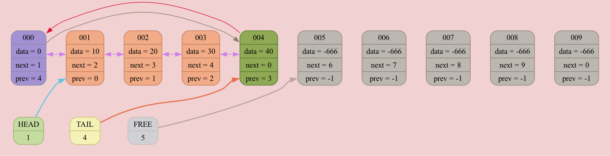
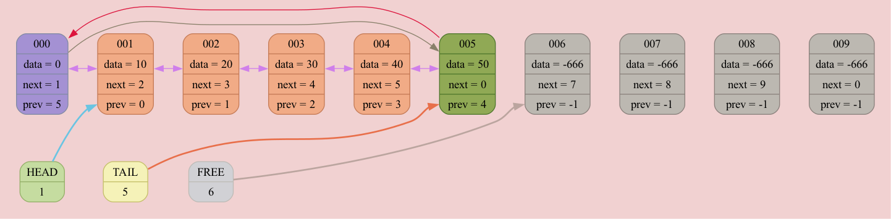
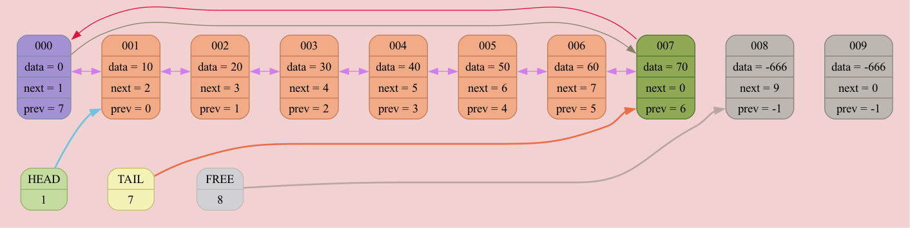
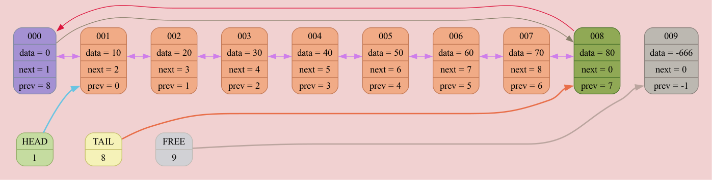
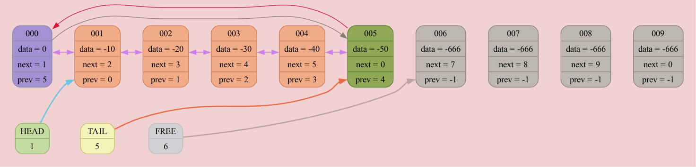
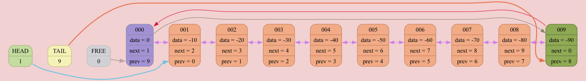
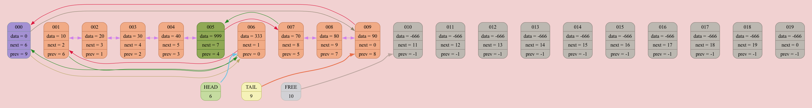

Colors meanings:
List[0x16b5f6f60] born at "/Users/anatolij/Documents/GitHub/List/source/main.cpp": 8, name 'list'
occupied node
⮑ prev arrows
free node
⮑ next arrows
head
⮑ head arrow
tail
⮑ tail arrow
free
⮑ free arrow
zero node
⮑ zero next arrow
insert node
⮑ zero prev arrow
outsert node
DUMP #1: function INSERT_AFTER was called from /Users/anatolij/Documents/GitHub/List/source/main.cpp: 14

DUMP #2: function INSERT_AFTER was called from /Users/anatolij/Documents/GitHub/List/source/main.cpp: 14

DUMP #3: function INSERT_AFTER was called from /Users/anatolij/Documents/GitHub/List/source/main.cpp: 14

DUMP #4: function INSERT_AFTER was called from /Users/anatolij/Documents/GitHub/List/source/main.cpp: 14

DUMP #5: function INSERT_AFTER was called from /Users/anatolij/Documents/GitHub/List/source/main.cpp: 14

DUMP #6: function INSERT_AFTER was called from /Users/anatolij/Documents/GitHub/List/source/main.cpp: 14

DUMP #7: function INSERT_AFTER was called from /Users/anatolij/Documents/GitHub/List/source/main.cpp: 14

DUMP #8: function INSERT_AFTER was called from /Users/anatolij/Documents/GitHub/List/source/main.cpp: 14

DUMP #9: function INSERT_AFTER was called from /Users/anatolij/Documents/GitHub/List/source/main.cpp: 14

DUMP #10: function OUTSERT was called from /Users/anatolij/Documents/GitHub/List/source/main.cpp: 17

DUMP #11: function OUTSERT was called from /Users/anatolij/Documents/GitHub/List/source/main.cpp: 18

DUMP #12: function INSERT_AFTER was called from /Users/anatolij/Documents/GitHub/List/source/main.cpp: 20

List[0x16b5f70d0] born at "/Users/anatolij/Documents/GitHub/List/source/main.cpp": 22, name 'list2'
DUMP #13: function INSERT_AFTER was called from /Users/anatolij/Documents/GitHub/List/source/main.cpp: 28
DUMP #14: function INSERT_AFTER was called from /Users/anatolij/Documents/GitHub/List/source/main.cpp: 28
DUMP #15: function INSERT_AFTER was called from /Users/anatolij/Documents/GitHub/List/source/main.cpp: 28
DUMP #16: function INSERT_AFTER was called from /Users/anatolij/Documents/GitHub/List/source/main.cpp: 28

DUMP #17: function INSERT_AFTER was called from /Users/anatolij/Documents/GitHub/List/source/main.cpp: 28

DUMP #18: function INSERT_AFTER was called from /Users/anatolij/Documents/GitHub/List/source/main.cpp: 28

DUMP #19: function INSERT_AFTER was called from /Users/anatolij/Documents/GitHub/List/source/main.cpp: 28

DUMP #20: function INSERT_AFTER was called from /Users/anatolij/Documents/GitHub/List/source/main.cpp: 28
DUMP #21: function INSERT_AFTER was called from /Users/anatolij/Documents/GitHub/List/source/main.cpp: 28

List[0x16b5f6f60] born at "/Users/anatolij/Documents/GitHub/List/source/main.cpp": 8, name 'list'
DUMP #22: function INSERT_AFTER was called from /Users/anatolij/Documents/GitHub/List/source/main.cpp: 30

List[0x16b5f70d0] born at "/Users/anatolij/Documents/GitHub/List/source/main.cpp": 22, name 'list2'
DUMP #23: function OUTSERT was called from /Users/anatolij/Documents/GitHub/List/source/main.cpp: 34